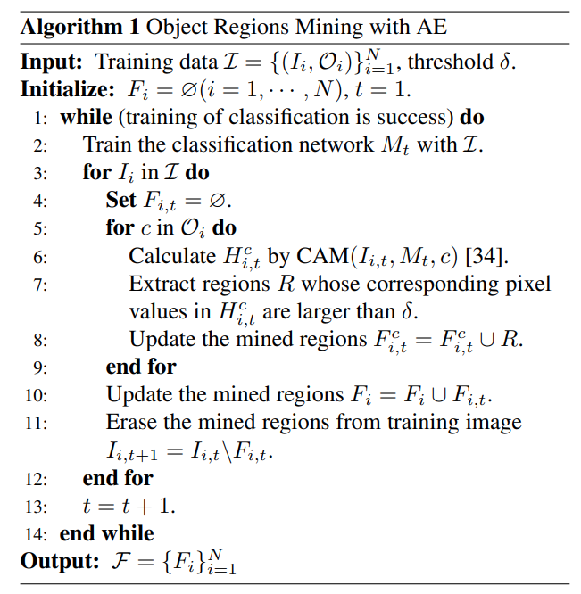

AE-PSL - CVPR 2017
Contents
AE-PSL - CVPR 2017#
Information
Title: Object region mining with adversarial erasing: A simple classification to semantic segmentation approach, CVPR 2017
Reference
Review By: 김현우
Edited by: Taeyup Song
Problem Statement#
Weakly Supervised Semantic Segmentation을 위해 class label을 이용하여 Class Attention Map (CAM)을 이용한 propagation 방법을 사용하는데, CAM이 object boundary를 sharp하게 구분하지 못함.
CAM은 max pooling layer 등 resolution이 낮아지면서 blury해지며, GAP에서 feature의 전체 영역에 대해 pooling하기 때문에 불필요한 부분에도 activation이 생성된다.
Blurrly한 CAM을 개선하기 위해 1) sharpness를 개선할 수 있는 constrain to boundary loss와 미리 학습된 model을 이용하여 추출한 saliency 정보를 추가로 활용
CAN에서 attention이 가장 높은 영역을 지우고 반복적으로 attention을 구하는 방법인 Adversarial Erasing(AE) 접근 방법이 제안되었지만, boundary에서 noise가 심한 문제가 존재함.
{kind=link}
Fig. 100 Illustration of the proposed AE approach (source arXiv:1703.08448)#
Proposed Method#
AE 방법을 이용한 object region mining과 semantic segmentation 결과 개선을 위한 online PSL(Prohibitive Segmentation Learning) 로 구성됨.
1. Object Region Mining with AE#
{kind=link}
Fig. 101 Overview of the proposed AE approach (source arXiv:1703.08448)#
작고 희소한(sparse) classification network의 분류 영역(discriminative region)을 확대하기 위해 객체에 해당하는 영역을 점진적으로 확장하는 AE 접근 방법을 적용함.
\(N\) 개의 training set \(\mathcal{I}=\{(I_i,\mathcal{O}_i\}_{i=0}^{N}\) 과 AE를 통해 발굴된 object의 영역이 \(\mathcal{F}=\{F_i\}_{i=0}^{N}\) 일 때, 아래 과정을 반복한다.
AE Approach
Step 1 객체 분류 영역을 얻기 위한 classification network \(M_t\) 학습
Network 초기화: DeepLab-CRF-LargeFOV, Global Average Pooing Layer는 conv7에 적용하며, representations는 FCL(fully-connected layer)를 거쳐 생성됨.
Loss function: squared label prediction loss [30]
Step 2 높은 activation을 가지는 영역을 지우고
각 image level label에 해당하는 classification activation maps \(\text{CAM}(\cdot)\)을 생성
Hard threshold를 적용하여 높은 activation 을 가지는 영역을 제거
제거된 영역은 mean pixel 값으로 채우고 다시 training에 사용.
학습 과정에서 배경에 정보도 중요하므로, saliency detection 정보를 활용함. → 낮은 saliency을 갖는 영역을 background \(B_i\) 로 설정함.
Step 1 부터 반복하여 object region \(\mathcal{F}\)을 찾음.
학습-erase를 반복하는 과정에서 classification network는 activation이 제거된 영역보다 작지만, 영상 내에서 가장 discriminative한 region을 찾음. (가능한 classification 성능 유지하는 방향으로 학습)

{kind=link}
제안된 AE 접근 방법은 초기 segmentation networks를 학습할 수 있는 segmentation mask \(\mathcal{S}=\{S_i\}^{N}_{i=1}\)를 제공함.
여기서 \(i\) 번째 segmentation mask는 \(S_i=F_i \cup B_i\) 와 같이 정의된다. 이때 다음에 속하는 pixel의 경우 연산에서 제외한다.
서로 다른 class에 matching되는 경우 foreground regions에서 제외
AE로 판단한 object regions 중 낮은 saliency를 갖는 pixels 제외
semantic labels로 assign되지 않은 경우 제외
2. Online PSL for Semantic Segmentation#
AE 방법을 이용하여 초기 segmentation mask를 구하는 과정은 Fig.3의 (a)와 같다.
결과 mask에서 background 영역은 “black”으로, object 영역은 “purple” 색으로 표현 됨. AE 방법을 적용하는 경우 “blue”영역과 같이 object 혹은 background와 관련된 영역의 경우 segmentation map에서 누락될 수 있다.
또한 경계 영역을 나타내는데 한계가 있어, 노이즈가 포함된 semantic labels이 관찰될 수 있다.
AE 접근 방법의 한계를 극복하기 위해 online PSL(Prohibitive Segmentation Learning) 방법 제안함.
Online PSL은 Fig 3.(b)와 같이 semantic segmentation networks에 classification branch가 추가된 형태로 구현된다. (classification branch가 일종의 attention의 역할을 함.)
{kind=link}
Fig. 102 The proposed online PSL approach (source arXiv:1703.08448)#
Online PSL은 classification 결과를 이용하여 신뢰할 수 있는 카테고리 별 segmentation map을 찾고, segmentation 적은 노이즈를 가지는 보조적인(auxiliary) supervision map을 생성함.
Auxiliary supervision map은 semantic segmentation network의 학습과정에서 함께 업데이트 되며 점점 신뢰성을 확보한다.
Pixel location \(u\)에 대해 semantic label \(c \in \mathcal{C}^{\text{seg}}\)에 속할 확률을 구하는 segmentation networks의 prediction \(f_{u,c}(I,\theta)\), 입력 영상 \(I\)에 대한 classification branch(image-spedific label (~=classification label) set \(\mathcal{O}^{\text{seg}}\))의 prediction이 \(v\)라면, additional segmentation mask는 다음과 같이 정의된다.
\[ \hat{S}=\max\{[1,v]\otimes f(I;\theta)\}. \]여기서 ⊗는 weighting operator이고, 추가된 \(1\)의 경우 background category의 weight이다.
이 연산을 거쳐 small classification category score를 가지는 label의 segmentation score는 축소되고, 큰 영향을 미치는 (dominant한) label에 대한 segmentation score는 강화된다.
Semantic segmentation network 학습을 위해 Noise-prohibitive segmentation loss를 적용한다.
\[ \min_{\theta}\sum_{I\in\mathcal{I}}J\left( f(I;\theta),S\right)+J\left( f(I;\theta),\hat{S}\right) \]AE를 이용하여 구한 segmentation mask와 PSL 과정을 거쳐 생성한 mask의 cross-entropy loss의 합으로 구성된다.
\[ J\left( f(I;\theta),S\right)=-\frac{1}{\sum_{c\in\mathcal{O}^{\text{seg}}}|S_c|}\sum_{c\in\mathcal{O}^{\text{seg}}}\sum_{u\in\ S_c}\log f_{u,c}(I;\theta), \]\[ J\left( f(I;\theta),\hat{S}\right)=-\frac{1}{\sum_{c\in\mathcal{O}^{\text{seg}}}|\hat{S}_c|}\sum_{c\in\mathcal{O}^{\text{seg}}}\sum_{u\in\ \hat{S}_c}\log f_{u,c}(I;\theta), \]학습과정에서 Image label의 supervision을 사용한 segmentation의 성능은 점진적으로 개선된다.
Test 과정에서 threshold \(p\) 보다 confidence가 낮은 경우 0으로 변경하여 최종 segmentation 결과를 생성한다.
Experimental Result#
1. Implementation Details#
Dataset: PASCAL VOC 2012 Benchmark (20 foreground objects and the background)
Backbone and Network architecture
Classification: DeepLab-CRF-LargeFOV (ImageNet pretrained VGG-16 backbone)
Hyper-parameter
mini-batch : 30 images (321x321 pixels randomly cropped images)
AE 과정에서 상위 20% 큰 probability를 가지는 영역을 삭제
Saliancy value가 0.06 미만의 값을 background로 간주함.
Test 과정의 threshold \(p\) 는 0.1로 설정.
2. Comparisons with State-of-the-arts#
PASCAL VOC 2012 segmentation benchmark dataset test set에서 21개 class에 대한 pixel IoU의 평균 (\(mIoU\))로 비교한 결과 box supervision을 사용한 architecture 대비 낮은 성능을 나타냈으나, Image-lavel labels를 supervision으로 사용한 archtecture중에서는 가장 좋은 성능을 나타냄을 확인할 수 있다.
{kind=link}
제안된 방법은 다양한 object가 복잡하게 구성된 scene에서도 좋은 결과를 보이지만, AE 과정의 한계로 좋지 않은 결과도 존재함. (color와 texture 등 low level visual feature 을 활용하여 개선해야 함)
{kind=link}
3. Ablation Analysis#
AE step에 따른 loss에 Step이 높아질 수록 loss값이 높게 나타남. (구분이 어려운 경우가 발생)
또한 제거되는 영역도 object 영역을 벗어나게 됨. (적절한 Erasing 횟 수 설정이 중요)
online-PSL 기법을 적용한 결과가 적용 전 대비 mIoU가 3.2% 개선됨.
PSL을 추가로 학습시키는 경우 (PSL++) mIoU가 0.9 더 개선됨
Weighted map을 구하기 위한 과정에서 classification confidence 대신 정답 label을 활용하면 1.1% 추가 개선됨. (개선 가능한 최대 성능)